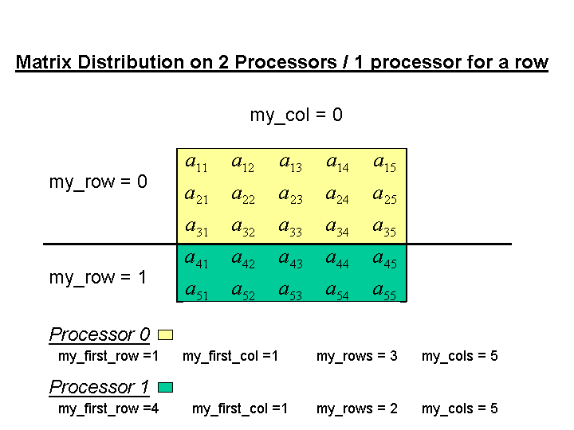
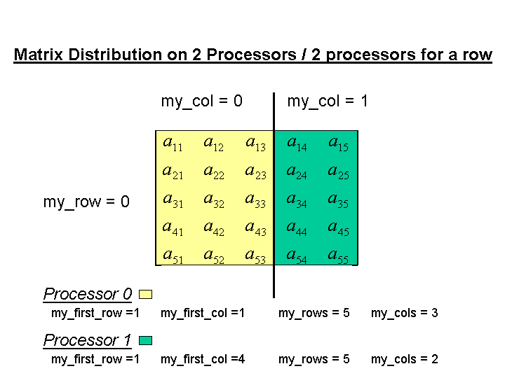
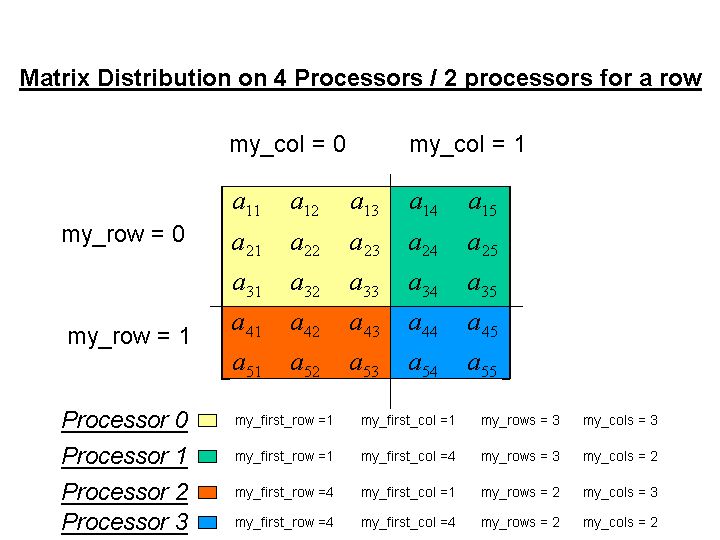
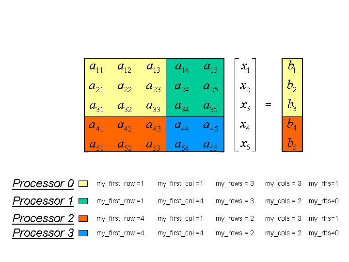

|
Trilinos
|
|
Trilinos
|
Adelus is an object-oriented interface to a LU solver for dense matrices on parallel platforms. These matrices are double precision real matrices distributed on a parallel machine.
The matrix is torus-wrap mapped onto the processors(transparent to the user) and uses partial pivoting during the factorization of the matrix. Each processor contains a portion of the matrix and the right hand sides determined by a distribution function to optimally load balance the computation and communication during the factorization of the matrix. The general prescription is that no processor can have no more (or less) than one row or column of the matrix than any other processor. Since the input matrix is not torus-wrapped permutation of the results is performed to "unwrap the results" which is transparent to the user.
Adelus provides the interfaces with the LU factorization and solver functions using Kokkos View, host pointer, and device pointer.
Some examples will be given to reveal the matrix distribution for a number of cases. The variable names given are those referred to the the GetDistribution function of Adelus.



The standard procedure for using LU factorization to solve a matrix equation is to first factor the matrix, then perform the forward and backward solve. It is well known that the forward solve can be accomplished during factorization by appending the right hand side to the matrix. When this is done the forward solve does not have be performed and the lower triangular matrix does not have to be used which saves communication costs during parallel operation. The packing of the matrix and right hand sides will now be described using the four processor example above when one right hand side is given.
As stated previously the right hand side is appended to the matrix. When there is one right hand side this is attached to the first column of the processor mesh. This is shown in the next figure.

Note the matrix is packed in column order.
After the solution process the answers are retrieved from the positions where the right hand sides were stored.